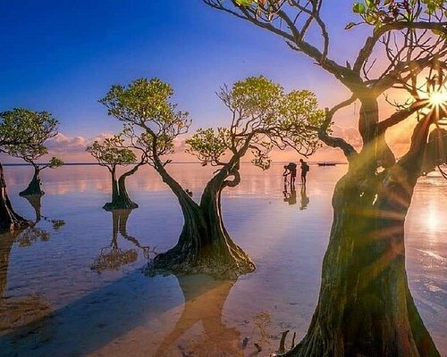
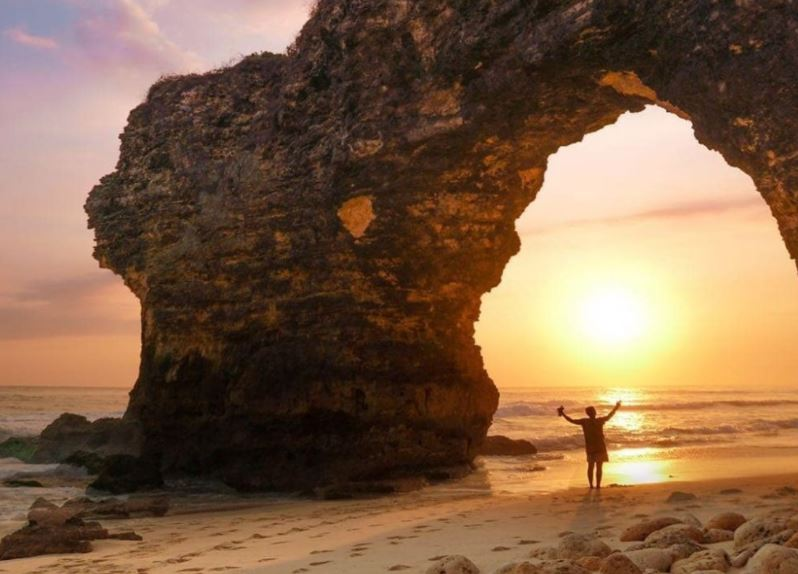
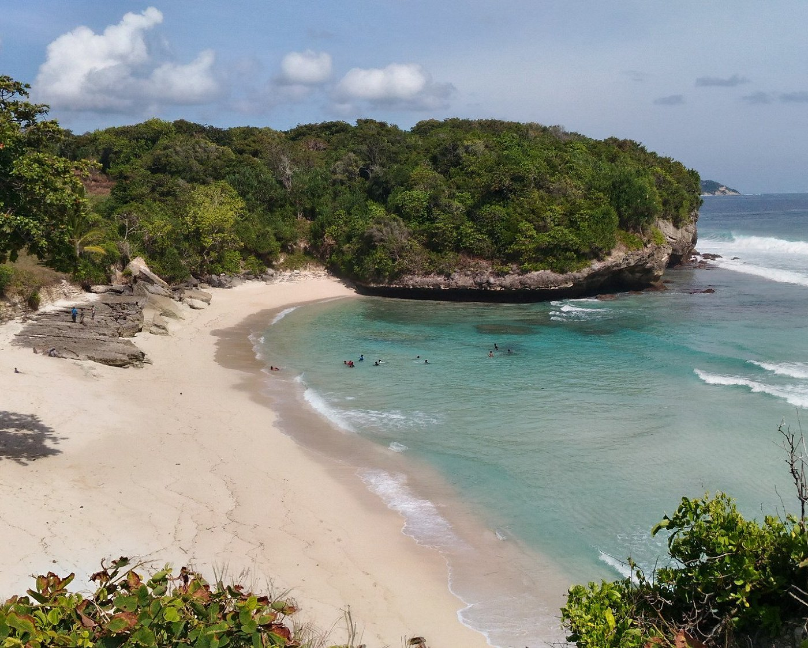
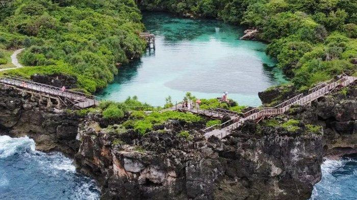

Sumba Gallery
Waingapu
Waingapu merupakan kota terbesar di Sumba sehingga juga menjadi salah satu tujuan utama bagi wisatawan. Bukit Wairinding menjadi salah satu daya tarik di Waingapu, pemandangan savana yang luas, juga warnanya yang berbeda-beda mengikuti musim menjadi alasan mengapa Bukit Wairinding banyak peminatnya. Selain Bukit, Waingapu juga memiliki Pantai yang sangat indah bernama Pantai Walakiri dengan siluet menawan yang berasal dari pohon bakaunya, juga pasir putihnya yang cantik. Desa Prailiu pastinya menjadi tempat yang sangat amat menarik terutama bagi pencinta budaya karena disana dapat melihat proses pembuatan kain tenun ikat khas Sumba.

Tambolaka
Tambaloka merupakan kota yang berkembang pesat dan berbagai destinasi menarik ada di Tambaloka. Salah satu ikon Pulau Sumba terdapat di Tambaloka ini yaitu Pantai Bwanna dengan tebing tinggi dan lubang yang alami di tengahnya sehingga pemandangannya sangat menakjubkan. Pantai Mbawana juga tidak kalah bagus dengan Pantai Bwanna, Pantai Mbawana menawarkan suasana pantai yang alami, dan tenang. Desa Ratenggaro juga terkenal dengan rumah adat Sumba yang memiliki atap tinggi dan kuburan batu kunonya.

Welcome to Sumba
Pulau Sumba terletak di Provinsi Nusa Tenggara Timur. Savana yang luas, budaya dan tradisi yang kental, serta pantai eksotisnya merupakan hal yang membuat pulau ini menarik. Dengan keindahan alamnya, Sumba dijuluki sebagai “Afrika kecil di Indonesia”. Budayanya yang masih kental hingga saat ini, Sumba dikenal juga dengan kain tenun ikatnya dan ritual adat yang masih sangat kental dan dijaga sampai saat ini.
Kabupaten-Kabupaten di Pulau Sumba
- Kab. Sumba Tengah
- Kab. Sumba Timur
- Kab. Sumba Barat
- Kab. Sumba Barat Daya
Sumba Gallery
Waikabubak
Waikabubak adalah kota yang masih terasa nuansa tradisionalnya dan salah satu daya tariknya yaitu Desa Tarung dimana masyarakat-masyarakat masih menjalankan kehidupan tradisional dengan rumah-rumah khas Sumbanya. Air terjun tertinggi di Sumba terletak di Waikabubak yaitu Air Terjun Lapopu dimana airnya yang jernih mengalir di tengah hutan tropis sehingga menciptakan suasana menyejukkan. Bukit Hiliwuku juga dapat memanjakan mata dengan keindahan savana yang khas.

Danau Weekuri
Sumba Barat Daya menawarkan perpaduan alam yang eksotis dan budaya yang unik. Salah satu destinasi favorit wisatawan yaitu Danau Weekuri menawarkan air payau berwarna biru yang amat jernih sehingga sangat pas untuk berenang atau sekedar bersantai saja. Pantai Mandorak juga menjadi tempat wisatawan dimana terdapat laguan tersembunyi dengan air laut yang tenang dan tebing batu yang menambah keindahannya.
